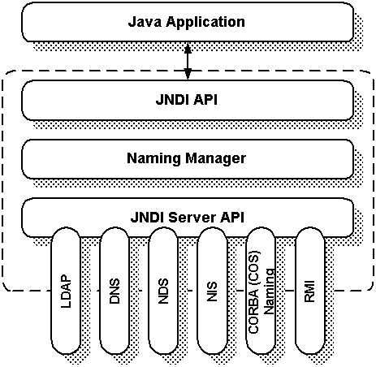

Naming
Services and JNDI
Gopalan Suresh Raj
What is a Naming Service?
A naming system provides a natural, understandable way of identifying and associating names with data. For example, the DOS file system uses a naming system for associating data with folder and file names, while a relational database uses a naming system for associating data with column and table names. Naming systems allow humans to interact with complex computer addressing systems by associating data with simple, understandable names.
A naming service is a dedicated piece of software that manages a naming system or namespace. Naming services often run independent of the computer systems that use them. In other words, they provide the service of associating names with data or objects -- a naming system - but are independent and can serve any system that understands their protocol and can connect to them.
Directory and naming services usually employ two layers: a client layer and a server layer. The server is responsible for maintaining and resolving the actual name-object bindings, controlling access, and managing operations performed on the structure of the directory service. The client acts as an interface that applications use to communicate with the directory service.
The Java Naming and Directory Interface
The Java Naming and Directory Interface (JNDI) shown in Figure is a client API that provides naming and directory functionality. JNDI is specified in Java and is designed to provide an abstraction that represents those elements most common to naming and directory service clients. JNDI is not intended as an alternative to established naming and directory services; it is designed to provide a common interface for accessing existing services like DNS, NDS, LDAP, CORBA or RMI.

Figure: The Java Naming and Directory Interface
JNDI provides an interface that hides the implementation details of different naming and directory services behind the JNDI API. This allows multiple directory services to coexist and even cooperate within the same JNDI client. Using JNDI, a user can navigate across several directory and naming services while working with seemingly only one logical federated naming service.
click here to go to
My EJB HomePage...
| About the Author... |
| Gopalan Suresh Raj is a Software Architect, Developer and an active Author. He is contributing author to a couple of books "Enterprise Java Computing-Applications and Architecture" and "The Awesome Power of JavaBeans". His expertise spans enterprise component architectures and distributed object computing. Visit him at his Web Cornucopia© site (http://www.execpc.com/~gopalan) or mail him at gopalan@execpc.com. |
|
This site was developed and is maintained by Gopalan Suresh Raj This page has been visited |
|
Last Updated : Dec 19, '98 |
||
Copyright (c) 1997-98, Gopalan Suresh Raj - All rights reserved. Terms of use. |
All products and companies mentioned at this site are trademarks of their respective owners. |